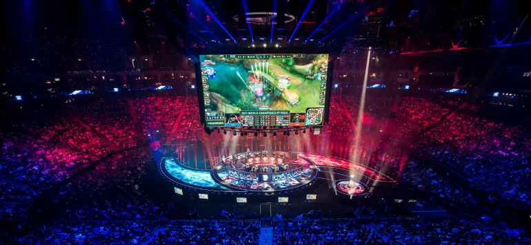
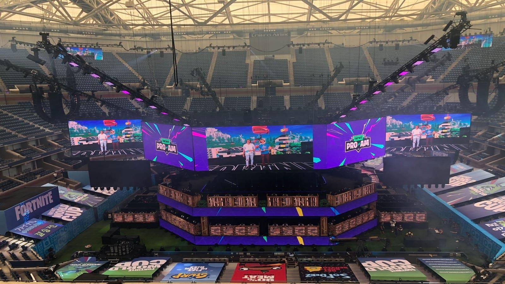

Évidemment ceci n'est qu'un brève aperçu de l'E-SPORT(compétions gaming)
Le fait de jouer de façon décontractée avec des amis ou dans des rencontres non officielles reste techniquement classé dans les eSports. Mais il existe toutefois une grosse différence entre cela et le jeu professionnel. De la même manière qu’il existe une différence énorme entre jouer un match amical de tennis et participer à Roland-Garros.Venons-nous de comparer le jeu vidéo à un sport comme le tennis ? Parfaitement ! Et c’est une comparaison tout à fait justifiée. Il existe bien évidemment des différences importantes entre les eSports et les sports traditionnels, mais il existe aussi bien des similarités. Les fans de eSports aiment regarder leurs équipes et leurs joueurs favoris dans le feu de l’action comme les fans des autres sports. Les rencontres professionnelles attirent déjà un large public et l’intérêt qu’elles suscitent va augmenter considérablement dans les années à venir. Lien vers une une analyse plus profonde de l'E-sport
En 2018 une des plus grosse compétition c'est déroulé autour du jeu Fortnite que tout le monde connait Chaque joueur est avec au moins 50 000 dollars, tandis que le champion en solo de la Fortnite World Cup a reçu 3 millions de dollars. Mais malheureusement c'est Bugah un qui est repartit avec 3 millions de dollars en poche.
